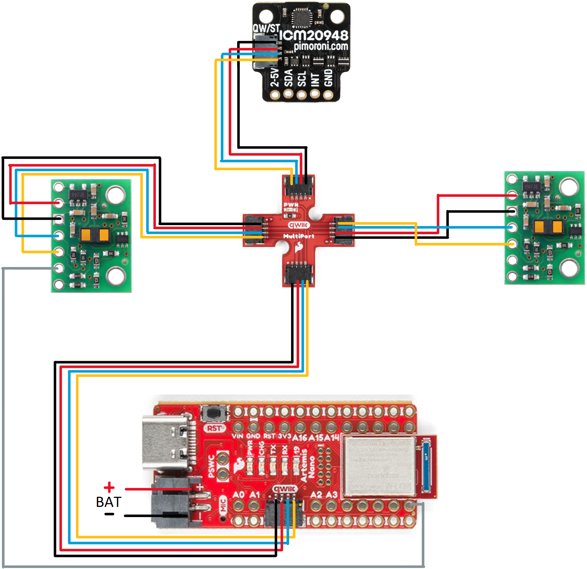
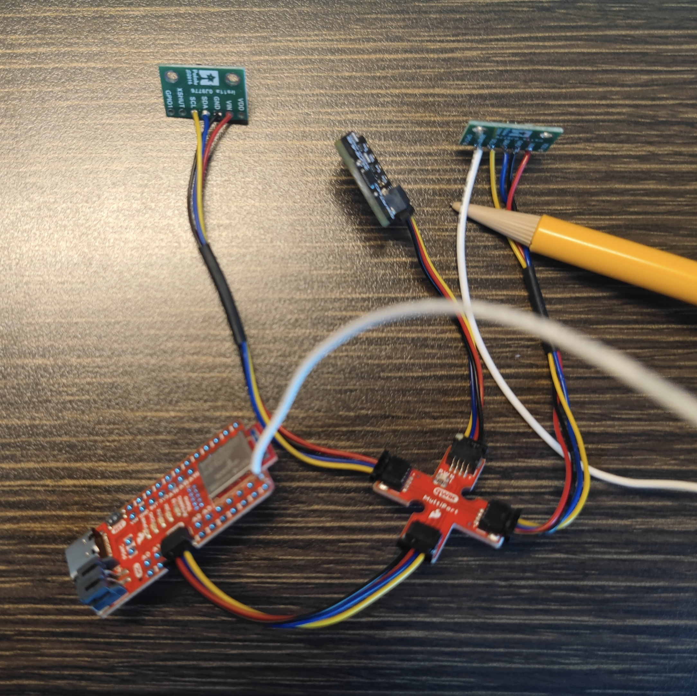
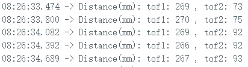
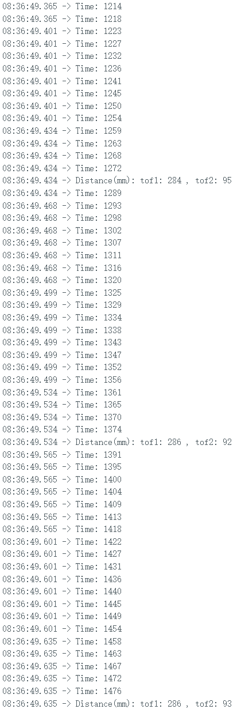
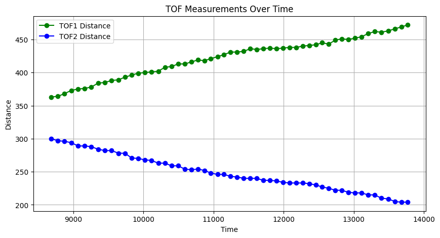

Part 1: Prelab
According to datasheet, the sensor's default I2C address is 0x52. Since the robot will uses two ToF sensors, but the address of the sensor is hardwired on the board, we can only programmatically change the addresses or enable the sensors separately by changing the voltage of their shutdown pins. I choose to solder the XSHUT pin of a TOF (tof1) to GPIO 8 of the artemis board to change the address, as shown by the grey line in Figure 2. First, I will turn off tof1 and then change the address of tof2. Finally, I will turn on tof1 again. Therefore, both sensors can be used simultaneously.
I will mount one sensor in front of the robot and the other in the back of the robot. So obstacles can be seen when the robot is moving forward, backward, and rotating. But this may make the robot miss obstacles on both sides while moving forward. If the sensors are mounted on the left and right sides, the robot loses the front and rear view, so that the robot is prone to hit obstacles while moving. If the sensors are mounted on adjacent sides (e.g., front side and right side), both cause the robot to miss obstacles on the other side.
Part 2: Lab tasks
Wiring
According to the Connection Scheme, I soldered the two tof sensors, imu, and my artemis board as shown in Figure 2.
The address is 0x29 as shown in Figure 3. This is the same as described in Pololu website . Since ToF is a slave device, it only has 7bit address (0x29 = 0101001). However, if an 8-bit representation is used with the read/write bits as least significant bits (0 for write and 1 for read), the 7-bit address (0x29) will be shifted one bit to the left and the read/write bit will be appended to that address so that the address will be 0x52 = 01010010.
Disscusion of ToF sensor performance
The ToF sensor has 2 modes: Short(1.3m) and Long(4m). The short distance mode is more accurate, but the measurement distance is only 1.3m,
which is suitable for slow-moving robots. The long distance mode of 4m favors fast robots. Although the accuracy in this mode is lower due
to the noise, when due to the long distance, it enables fast moving robots to react in time. Therefore, I chose to use the long distance mode.
I designed a test platform, as shown in Figure 4, with the sensor in a similar position to where it will be on the robot.

Sensor range, Accuracy, Repeatability, and Ranging time
In the long-range mode and test environment shown in Figure 5, I used the tof sensor to collect data at 10-cm intervals from 0 cm to 450 cm, with more than 100 data at each distance. I did the above test in using 100ms timing budget and 300ms timing budget. The mean and standard deviation are shown in figure 6 and 7. The range of sensor in this mode is from 5cm - 400cm. Measurements from 10cm to 300cm are accurate. Outside this range, the measured values deviate significantly from the actual values. The data from the tests and the code for analyzing the data can be found in this file.

Demo of 2 ToF sensors working simultaneously
By using the following code burned into the Artemis board, two ToF sensors can be used simultaneously.
Disscusion of speed and limiting factor of ToF sensor
By adding the following code to loop() to print the Artemis clock to the serial output, I found that my loop was executing 4-5 milliseconds per cycle, while the 2 tof sensor was sampling at 85 milliseconds per cycle. The current limiting factor is the time wasted printing to serial output. This also causes some delay.
Bluetooth
I sent the distance measured by the two tof sensors in 5 seconds to my computer via Bluetooth and ploted it as shown in Figure 10. The following code is what I wrote in Arduino and JupyterNotebook for sending and receiving 5 seconds of tof sensor data. Two tof sensors were mounted on the test platform shown in Figure 4, moving from one wall to another. It can be seen that the distance measured by tof1 becomes larger as it moves away from the wall it is facing, while the distance measured by tof2 becomes smaller as it gets closer to the wall it is facing.
Discussion on infrared transmission based sensors
There several types of IR based sensor. Infrared reflective sensors are low cost, easy to use, and can be applied to close range detection, but have limited detection range and are sensitive to surface properties. Time-of-flight (ToF) infrared sensors, on the other hand, offer higher accuracy and range by measuring the time it takes for light to reflect back from an object. Their higher accuracy is less affected by object properties, making them suitable for use in robotics.
Sensitivity of sensors to colors and textures
Since the ToF sensor measures the time of flight of light, it is unaffected by and insensitive to the color of the object as long as the object is able to reflect enough light back to the sensor. The ToF sensor is also less sensitive to the surface texture of the object. However, if extreme surface conditions are encountered, such as very rough or highly reflective surfaces, the accuracy of the measurement may be affected, as rough surfaces may cause the light to scatter, and highly reflective surfaces may cause the light to be reflected away from the sensor.
As shown in Figure 11, at the same distance, I used the tof sensor to measure its distance from a white vegan leather surface (slightly rough), a flesh-colored rubber surface, copper foil, a white stainless steel mug surface (smooth), and a white kitchen towel (rough). The actual distance was 16 centimeters and the TOF measurements were all in the 13-16 cm range. Since I was using the long distance mode, I consider this error to be acceptable, and effectively proves that the tof sensor is insensitive to the color and roughness of an object's surface in non-extreme situations.